封城后的湖北荆州：医用级防护物资存量告急–专题-中国经营网
原文链接 备份链接 封城后的湖北荆州：医用级防护物资存量告急 2020-02-03 19:36 作者：邹黄晶 张玉 来源：中国经营网 特约撰稿 邹黄晶 本报记者 张玉 荆州、上海报道 “我们已经想尽了一切办法，目前最缺的还是医用级口罩、防 …
 图片来源：海洛创意
图片来源：海洛创意
记者：梁宙
“
武汉一线医护人员物资仍有较大缺口，湖北省卫生计生宣传教育中心通过官方微信公号“健康湖北”发布了武汉各大医院的接受社会捐赠公告。其中，有的医院求援公告已更新至第五版。
”
武汉一线医护人员物资仍有较大缺口。2020年2月11日，湖北省卫生计生宣传教育中心通过官方微信公号“健康湖北”发布了武汉各大医院的接受社会捐赠公告。
界面新闻梳理发现，包括武汉市第一医院、武汉市中心医院、武汉大学附属同仁医院、武汉市第四医院、武汉市第五医院、武汉市金银潭医院、武汉儿童医院20多家武汉市医院，均在“健康湖北”发布的武汉各大医院接受社会捐赠的公告中。
这些发布接受社会捐赠公告的武汉医院，所缺物资主要包括医用防护口罩、护目镜、防护服、移动紫外线消毒车、移动空气消毒机、长鞋套、医用帽、手术衣等医疗防护物资。各医院均标注了所缺物资的质量要求或海内外标准。
实际上，从一月下旬开始，武汉乃至全国多个省市的多家医院都出现了医疗防护物资紧缺的情况，并相继发布了接受社会捐赠公告。
据新华社2月8日报道，武汉市仍存在医疗物资缺口，以2月6日当天统计的数据为例——武汉市医用防护服当日需求是5.99万件，缺口是4.14万件；医用N95口罩当日需求11.9万个，缺口是5.68万个；医用护目镜包括面罩当日需求是2.25万个，缺口是1.92万个。
武汉市第一医院一名工作人员告诉界面新闻，该医院主要是缺N95口罩、防护服、医用外科口罩等医疗防护物资。2月10日，该院发布的接受爱心捐赠公告已经是更新至第四个版本，该院之前曾接受了3次的社会捐赠。
“此前接受社会捐赠以后，帮我们解决了很大的问题，但是N95口罩和防护服还是紧缺，因为此类防护物资的标准比较严格，捐赠的一些物资的标准不一定能够满足要求，所以这些防护物资我们还是希望得到社会的一些帮助。”该名工作人员说。
武汉儿童医院的医疗防护物资求援公告已经更新至第五版。“目前我们比较紧缺的是防护服和医用防护口罩，防护服大概缺1万套，医用防护口罩大概缺5万只。”武汉儿童医院一位工作人员表示。
武汉市金银潭医院也发出了接受社会捐赠公告，紧缺的防护物资包括医用外科口罩、N95口罩、一次性医用口罩、医用防护服、一次性手术衣等。该医院一名工作人员称，金银潭医院还紧缺心电监护仪、呼吸机等设备。“随着我们医院收治的重症病人越来越多，心电监护仪还是紧缺的，很多病人也需要使用呼吸机。”他说。
据光明网报道，2月10日，工业和信息化部运行监测协调局发布消息，新型冠状病毒肺炎疫情发生以来，工业和信息化部组织医疗物资企业复工扩产，会同相关部门全力做好医疗物资保障，重点做好武汉市及湖北省医疗物资调拨工作。
该报道称，截至2月9日24时，工信部已累计调拨47.01万件国标医用防护服，组织发送医用隔离眼罩/医用隔离面罩35.78万个、84消毒液6.45万箱、免洗手消毒液31.25吨，全自动红外测温仪663台，供武汉市及湖北省使用。
2月10日晚，国家卫生健康委统筹安排了19个省份对口支援湖北省除武汉市16个市州及县级市，确定了对口支援关系。同时，各支援省份要加强与受援地市的沟通与对接，积极协调支援所需的口罩、防护服、护目镜等相关医用防护物品。
附武汉各医院的接受社会捐赠公告
武汉市第一医院

武汉市中心医院

武汉大学附属同仁医院
（武汉市第三医院）
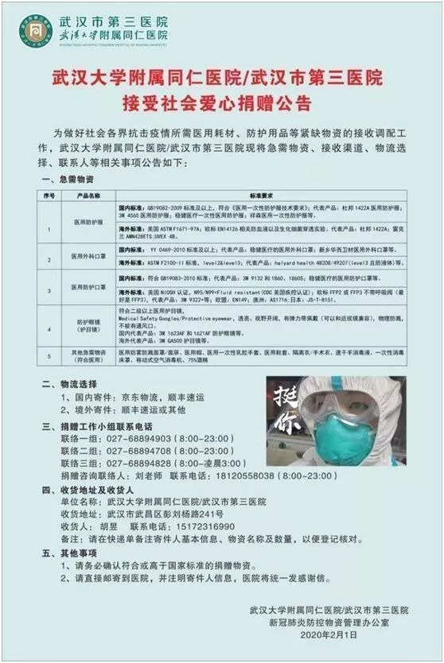
武汉市第四医院

武汉市第五医院

武汉市金银潭医院
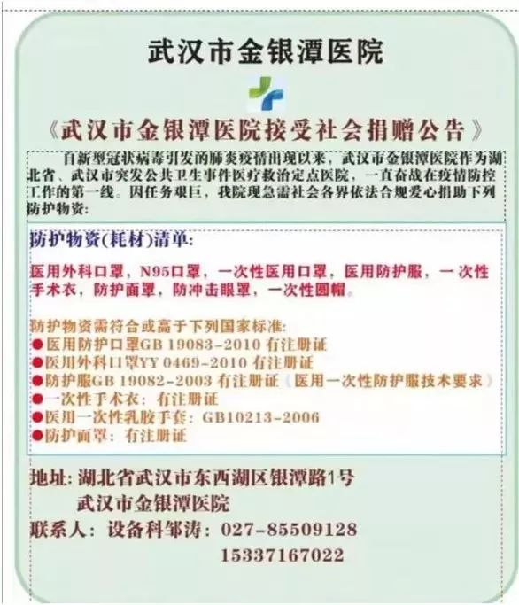
武汉市急救中心
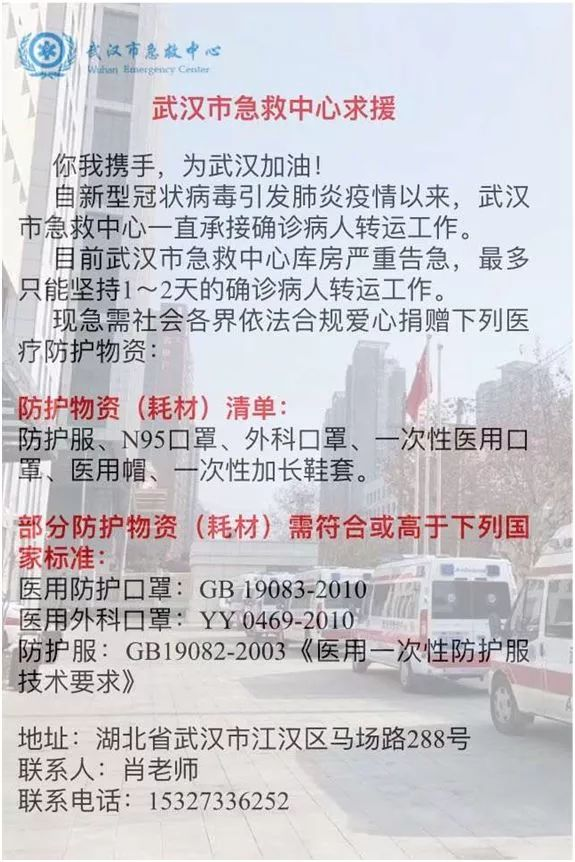
武汉市红十字会医院
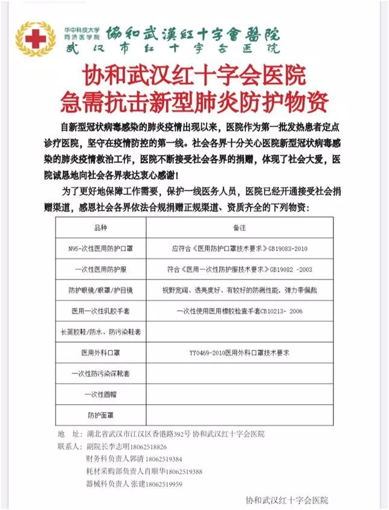
武汉市汉阳医院

武汉市汉口医院

武汉儿童医院

湖北六七二中西医结合骨科医院

武汉市普仁医院
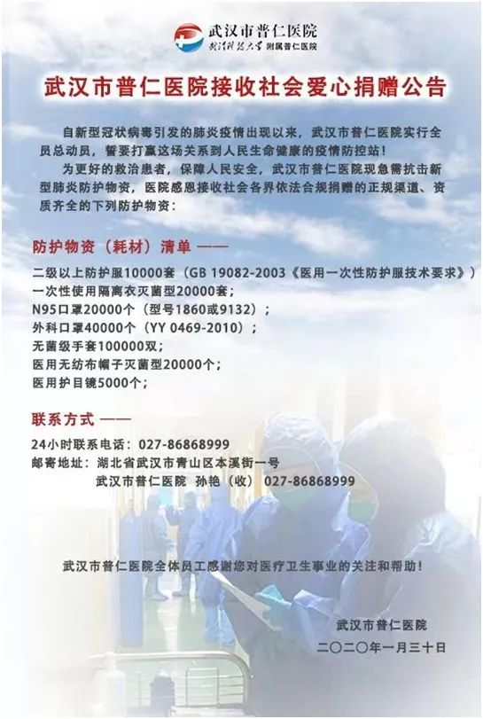
湖北省第三人民医院（湖北省中山医院）
 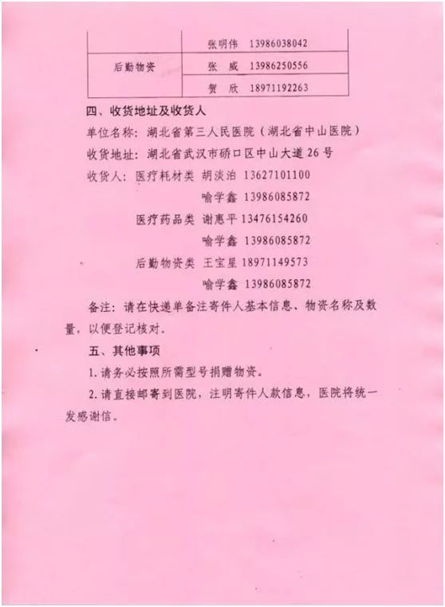
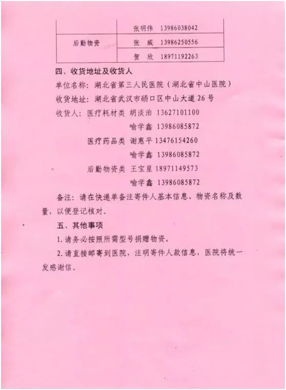
湖北省中西医结合医院

湖北省中医院

武汉市中医医院
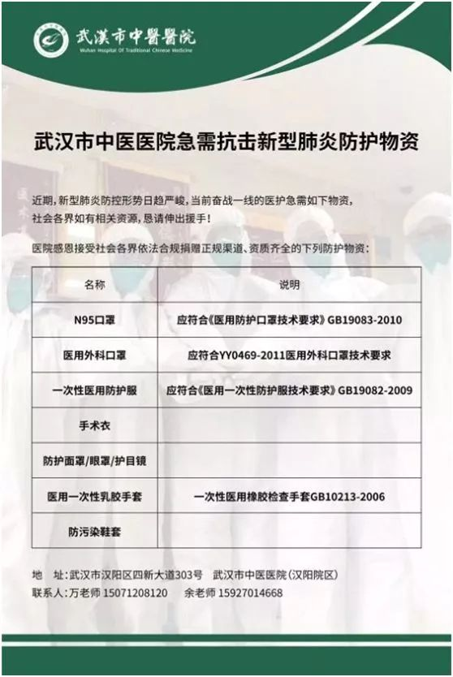
武汉科技大学附属天佑医院（同济天佑医院）
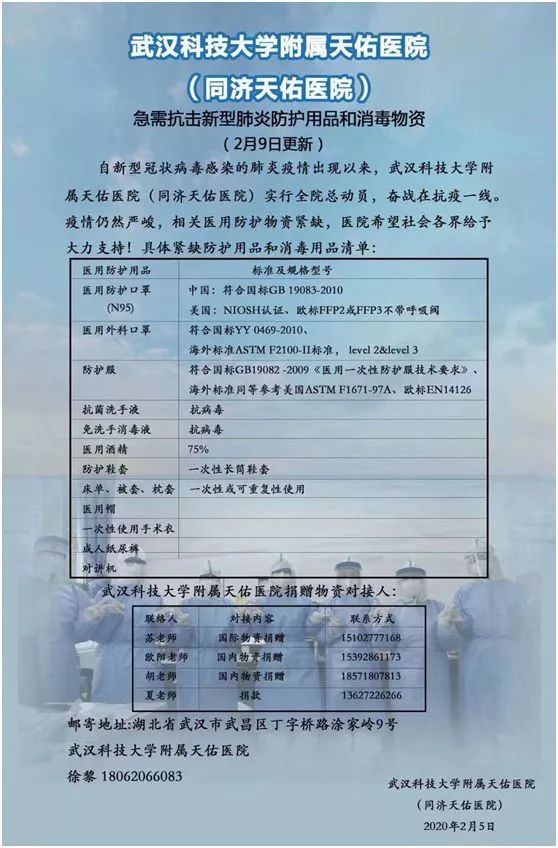
华中科技大学同济医学院附属同济医院
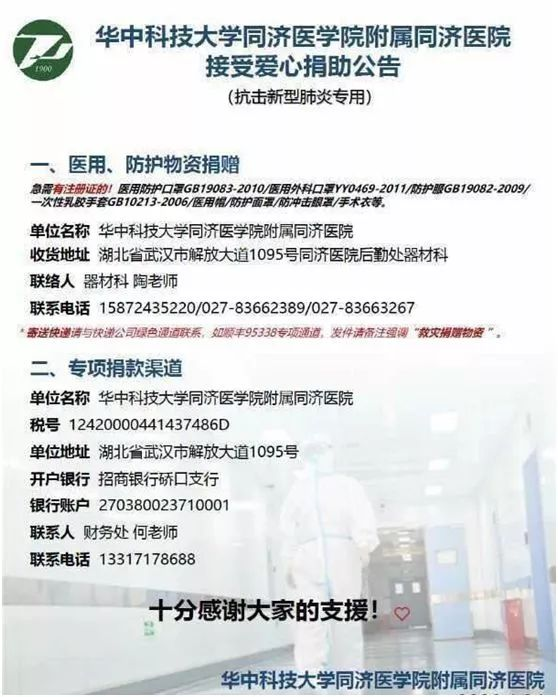
武汉市武东医院（武汉市第二精神病医院）

华中科技大学同济医学院附属协和医院
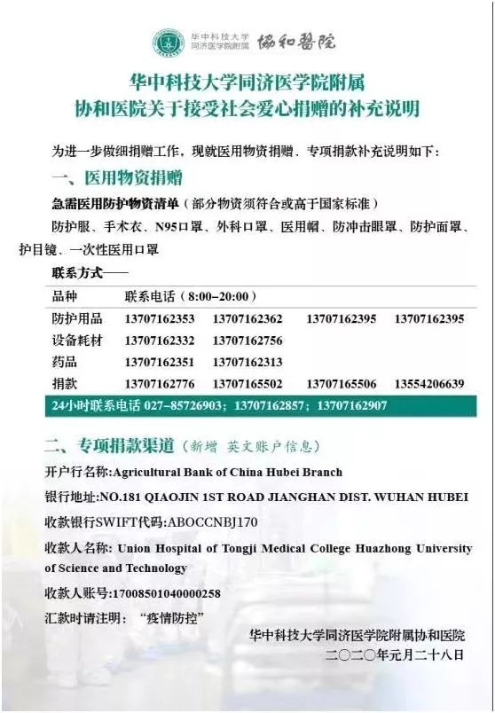
武汉大学中南医院

武汉市第六医院
急缺医用防护口罩、护目镜、防护服、移动紫外线消毒车、移动空气消毒机、长鞋套等。
【医用防护口罩】
国内标准： 符合中国GB19083-2010标准
代表产品： 3M的9132和1860
稳健医疗的医用防护口罩等
海外标准： 美国NIOSH认证，N95
欧标FFP2或FFP3不带呼吸阀
代表产品 3M 9322+
欧盟： EN149
【 防护服】
国内标准： 符合中国GB19083-2009标准
海外标准： 同等参考美国ASTM F1671-97A欧标、EN14126相关血液以及生化细菌穿透实验
【护目镜】
必须具有防溅功能，不能有通风口
防护面罩/防护面屏： 有防溅功能
代表产品： 上海翔絮面屏等
速干手消毒液
符合标准： Q31/0114000084C049
抗菌洗手液
符合标准： Q31/0114000084C020
医用折叠擦
手纸： 符合标准： GB/T 24455
联系人： 高老师 13720395387
华中科技大学同济医院附属梨园医院
急求合标防护服
国内标准：符合中国GB19083-2009标准
海外标准：同等参考美国ASTM F1671-97A欧标、EN14126相关血液以及生化细菌穿透实验
联系人： 设备科章民主任 15377664091
武汉市第八医院
急需物资：
1. n95口罩
2.防护服
地址： 湖北省武汉市江岸区中山大道1307号
联系人: 邱俊 15926277977

原文链接 备份链接 封城后的湖北荆州：医用级防护物资存量告急 2020-02-03 19:36 作者：邹黄晶 张玉 来源：中国经营网 特约撰稿 邹黄晶 本报记者 张玉 荆州、上海报道 “我们已经想尽了一切办法，目前最缺的还是医用级口罩、防 …
原文链接 备份链接 31.01.2020本文字数：1420，阅读时长大约2分钟 导读：医院现在依然是防护物资紧缺，特别是一些普通科（病）室。 作者 | 第一财经 吴绵强 “最近科室有确诊（新型冠状病毒感染的肺炎）的病例了，我们才开始穿防 …
原文链接 备份链接 今天，湖北省武汉市红十字会向武汉市中心医院提供了医用外科口罩4000个、医用防护服600套；向武汉市洪山区中医医院提供了医用防护服400套，84消毒液10箱，医用口罩5箱。武汉红十字会表示，接收的所有物资都将被送往一线 …
原文链接 备份链接 【财新网】（记者 张子竹 实习记者 黄雨馨 陈丽金）“我们的N95口罩每天消耗5500多个，防护服4000多套。由于消耗量很大，而且目前没有稳定的供应来源，所以现在这方面（医用物资）十分紧缺。”2月6日，湖北省随州市 …
原文链接 备份链接 什么拉长了社会捐赠物资从红十字会的仓库到疫情一线医务人员手中的最后短暂的路程？又是谁夺走了医生上战场的武器？ 记者 | 郭苏妍 叶雨晨 邓舒夏 王一越 编辑 | 张云亭 制图 | 程 星 2月1日，中国红十字总会工作 …